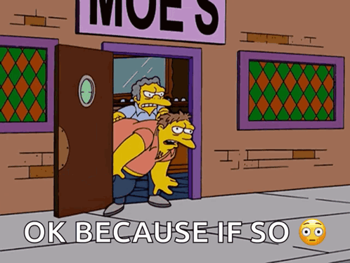
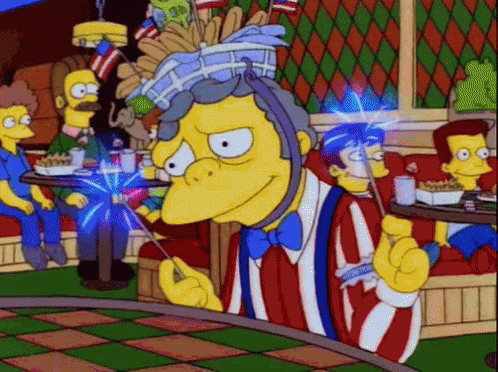
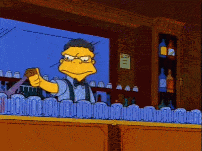
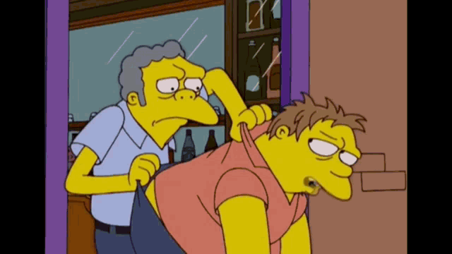
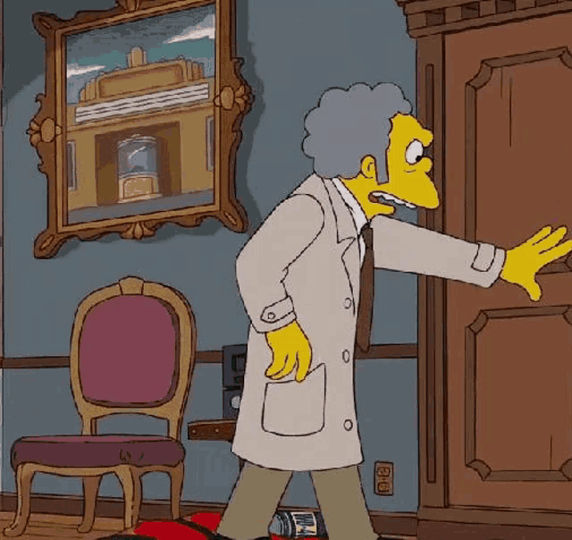
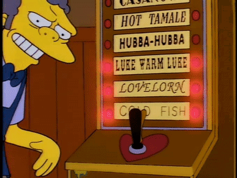

Moemar Morris Szyslak
Moe omistaa ja on baarimikko Moe'sissa, Springfieldin baarissa ja Barney Gumblen, Homer Simpsonin, Carl Carlsonin ja Lenny Leonardin suosikkipaikassa. Moella ei ole omaa asuntoa, ja hän asuu kolmannen luokan Regent Hotelissa. Hän on kuitenkin niin varakas, että hänellä on varaa plasmatelevisioon silloin tällöin. Moe on syvästi onneton henkilökohtaisessa elämässään ja kamppailee yksinäisyyden ja fyysisen epäviehättävyyden kanssa.

Hank Azaria
IMDB




